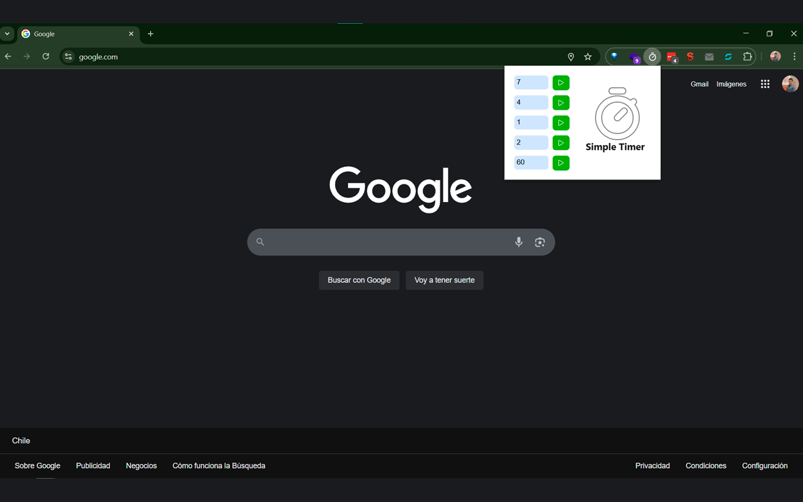
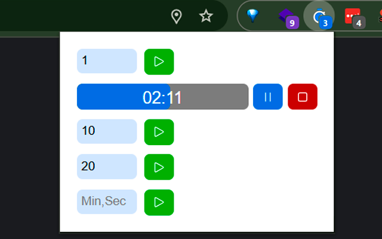
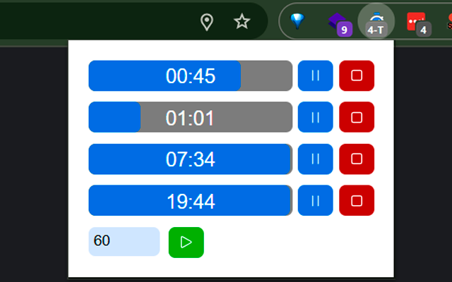

Cinco temporizadores a la vez
Cada uno se inicia, pausa y detiene por separado. Lleva la reunión, el descanso y el horno al mismo tiempo.
Mide tus bloques de trabajo, la pausa del café o la pasta en la olla sin salir del navegador. Escribe los minutos, dale play y sigue en lo tuyo: Simple Timer te avisa cuando termina.

Simple Timer hace una sola cosa y la hace bien: medir el tiempo mientras tú haces lo importante.
Cada uno se inicia, pausa y detiene por separado. Lleva la reunión, el descanso y el horno al mismo tiempo.
El icono muestra los minutos que quedan (12) o cuántos temporizadores hay activos (3-T). Se pone gris (12) cuando están en pausa.
Al terminar aparece una notificación del sistema, incluso con el navegador minimizado. No se cierra hasta que la veas.
Minutos con decimales (2,5 son 2:30) o segundos con una s (90s). Presiona Enter y listo.
Cierra el popup y sigue navegando: el temporizador no se detiene. Al volver a abrirlo verás el tiempo exacto que queda.
Solo pide tres permisos: notificaciones, almacenamiento y alarmas. No lee las páginas que visitas ni envía tus datos a ningún lado.
Escribe un número y se interpreta como minutos. Si necesitas algo más preciso, usa decimales: la parte decimal es una fracción de minuto. Para segundos, agrega una s al final.
Haz clic en cualquier ejemplo para probarlo en la demo.
Acepta coma o punto y hasta dos decimales. El sufijo de segundos puede ser s, seg o segundos, con o sin espacio.
| Escribes | Dura | Por qué |
|---|---|---|
| 25:00 | Minutos enteros | |
| 2:30 | Dos minutos y medio | |
| 0:45 | Puedes omitir el cero | |
| 0:06 | Un décimo de minuto | |
| 0:10 | Segundos con una s | |
| 1:30 | Más de 60 segundos también vale |
Un popup pequeño junto a la barra de direcciones, siempre a mano.



En Chrome, Edge, Opera, Brave y cualquier navegador basado en Chromium que pueda instalar extensiones de la Chrome Web Store.
Simple Timer te avisa con una notificación del sistema, que suena o no según cómo tengas configuradas las notificaciones en tu computador.
Revisa que tu sistema permita las notificaciones del navegador:
Nada: el temporizador sigue corriendo y el icono sigue mostrando el tiempo. El popup es solo una ventana para verlo y controlarlo.
Es gratis, sin anuncios y de código abierto. Los temporizadores se guardan solo en tu navegador y la extensión no envía datos a ningún servidor. Puedes revisar el código en GitHub.
Se instala en segundos y no necesita cuenta. Fíjala en la barra y tendrás tus temporizadores siempre a un clic.
Añadir al navegador, es gratis